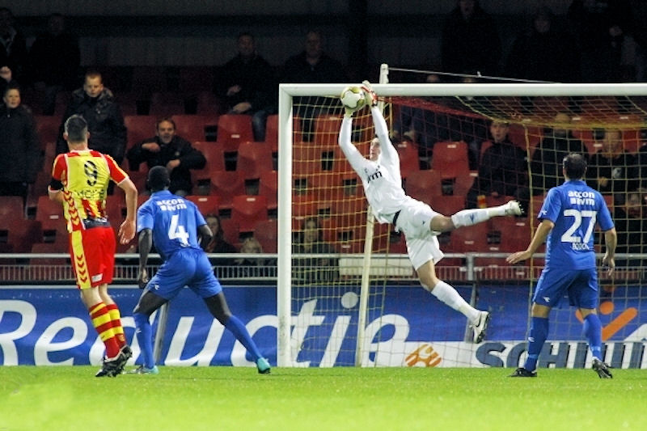
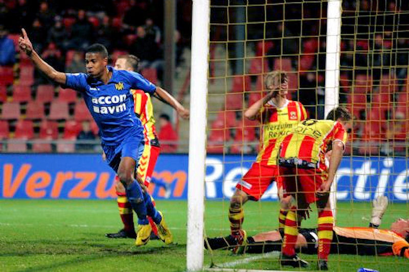

Roda JC Kerkrade heeft zich geplaatst voor de
achtste finales van het KNVB-bekertoernooi door een 0-2 overwinning
op Go Ahaed Eagles dat in eigen huis fel begon en al in de eerste
minuut dicht bij de openingstreffer zat. Gerritsen schoof maar
ternauwernood naast.
Het duurde achttien minuten totdat Roda iets terug deed. Hadouir,
een van de uitblinkers, stuurde met een perfecte steekbal Huysegems
weg. Deze schoot de bal echter rakelings naast.

In de slotfase van de eerste helft ontwikkelde Go Ahead een
overwicht. De thuisploeg vond echter telkens in de subliem keepende
Tyton een onmogelijk te passeren doelman. De Pool voorkwam vijf
minuten voor rust een zeker doelpunt door een volley van Gerritsen
uit zijn doel te ranselen.
In de tweede helft zakte de thuisploeg verder weg en drong Roda aan.
Een schot op de paal van Meulens bleek een waarschuwing, want kort
na de bijna-treffer was Huysegems wel trefzeker. De aanvaller had
het doelpunt grotendeels te danken aan Hadouir. Laatstgenoemde
omspeelde Janota en kon vanaf de achterlijn Huysegems een niet te
missen kans bieden: 0-1, (72).

Twee minuten na de openingstreffer besliste Meulens het duel. Hij
kon een door Kah verlengde bal op doel koppen. Op de eerste poging
had doelman Padt nog een antwoord, maar op de tweede poging van
Meulens moest de doelman capituleren. De intikker van Meulens
bepaalde de eindstand op 0-2.